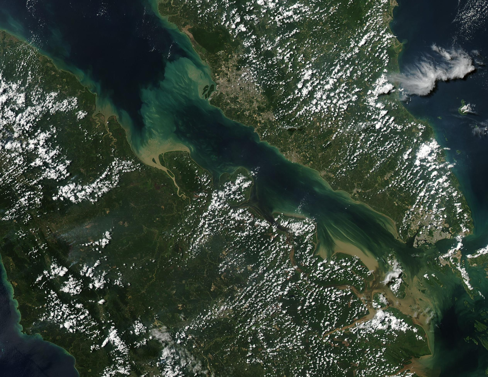
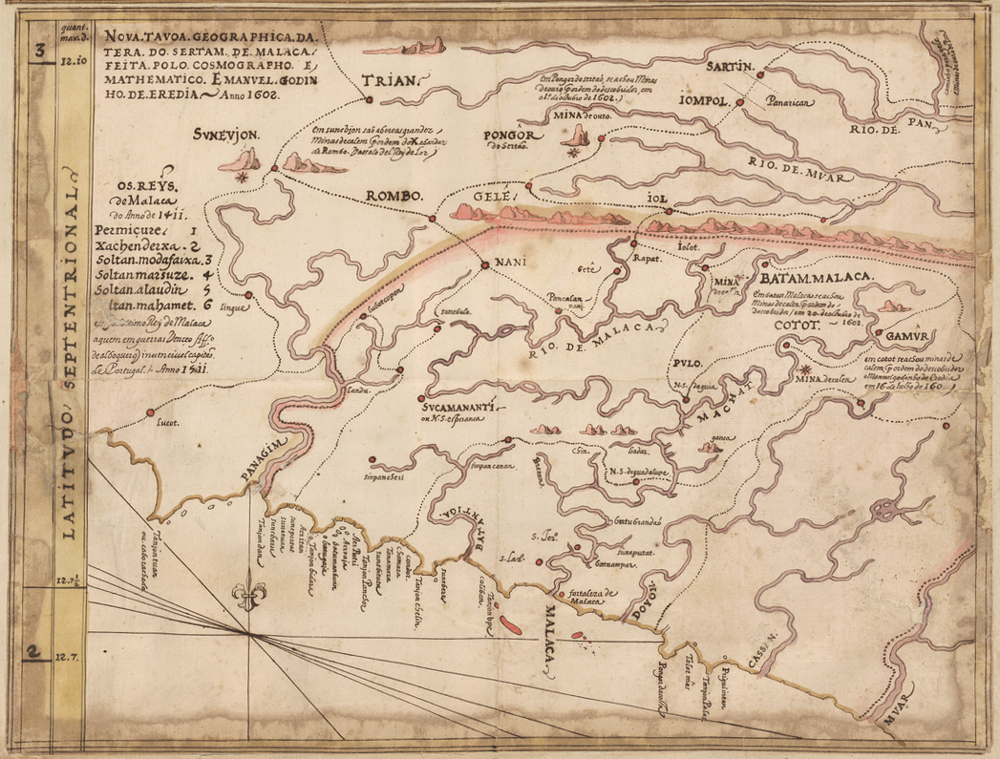
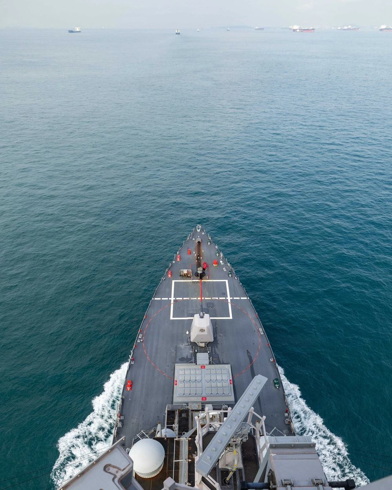

Ada satu fakta yang jarang disadari publik Indonesia: chokepoint minyak terbesar di dunia bukan Selat Hormuz — melainkan Selat Malaka. Data terbaru U.S. Energy Information Administration (EIA, update Maret 2026): 23,2 juta barel per hari mengalir lewat Malaka pada semester I-2025, mengalahkan Hormuz (20,9 juta). Dan selat ini — beserta dua "jalan pintasnya" — berada di halaman rumah kita.

Angkanya: Lebih Besar dari Hormuz
Selat Malaka membentang sekitar ±900 kilometer antara Pulau Sumatra (Indonesia) dan Semenanjung Malaya (Malaysia), menghubungkan Samudra Hindia dengan Laut China Selatan. Di titik tersempit — Phillips Channel dekat Singapura — lebarnya hanya 2,8 kilometer.
Lewat celah inilah mengalir ±25% perdagangan laut dunia dan 60.000–94.000 kapal per tahun. Yang paling strategis: ±80% impor minyak mentah China dan ±90% impor minyak Jepang melewati selat ini. Tiga negara berbagi pantainya — Indonesia, Malaysia, Singapura — dengan Thailand ikut dalam patroli keamanan.
"Malacca Dilemma": Ketakutan Terbesar China
Pada 2003, pemimpin China Hu Jintao mencetuskan istilah "Malacca Dilemma" — menggambarkan kerentanan strategis negaranya: 80% minyak impor China melewati selat sempit yang bisa terganggu perompakan, terorisme maritim, atau — yang paling ditakuti Beijing — blokade oleh AS dan sekutunya.
Respons China sejak itu berbentuk proyek raksasa: pipa minyak dari Asia Tengah, Rusia, Pakistan, dan Myanmar; Belt and Road Initiative; jaringan pelabuhan "String of Pearls" di Samudra Hindia; dan modernisasi angkatan laut. Satu selat sempit di Asia Tenggara — sampai mengubah strategi energi negara dengan penduduk 1,4 miliar jiwa.
600 Tahun Diperebutkan
Nilai selat ini bukan penemuan baru. Sekitar tahun 1400, Parameswara mendirikan Kesultanan Malaka — yang tumbuh menjadi pelabuhan terkaya Asia Tenggara. Penjelajah Portugis Tome Pires menulis dalam Suma Oriental: tidak ada pusat perdagangan yang lebih besar dari Malaka. Kesultanan ini menjalin hubungan dagang intensif dengan Dinasti Ming China.
Lalu datanglah perebutan berdarah. 24 Agustus 1511: Portugis di bawah Afonso de Albuquerque — dengan hanya 1.200 orang — merebut Malaka dari Sultan Mahmud Shah setelah 40 hari pertempuran. Monopoli Portugis yang kejam membuat para pedagang menghindari Malaka dan beralih ke Selat Sunda — pola "bypass" yang terjadi 500 tahun lalu, jauh sebelum ada istilah chokepoint.
14 Januari 1641: Belanda (VOC bersama Johor) merebut Malaka dari Portugis. Dan lewat Traktat London 1824, Belanda menukar Malaka dengan Bengkulu milik Inggris — selat ini resmi masuk orbit Imperium Britania. Enam abad, satu selat, perebutan yang sama.

Perompakan: Dari Zona Perang ke Patroli Bersama
Era modern membawa ancaman baru: perompakan. Puncaknya tahun 2000–2004 — pada 2004 tercatat 93 serangan di perairan Indonesia saja, dan pada 2005 Lloyd's menetapkan Selat Malaka sebagai zona berisiko perang, membuat premi asuransi melonjak.
Jawabannya datang dari diplomasi kawasan. 2004: Indonesia mengusulkan MALSINDO — patroli terkoordinasi Indonesia, Malaysia, dan Singapura (masing-masing patroli di perairannya sendiri). 2005: Eyes in the Sky, patroli udara gabungan. 2006: menjadi Malacca Straits Patrol dengan SOP yang disahkan di Batam, Thailand bergabung. Hasilnya dramatis: serangan anjlok dari puluhan kasus menjadi hampir nol pada 2008–2011.
Catatan: pada 2025 insiden naik lagi (108 kasus, +74% — terburuk dalam 19 tahun), tetapi mayoritas adalah pencurian oportunistik di kapal lambat, bukan ancaman strategis terhadap jalur pelayaran.
23,2 juta barel per hari. 2,8 kilometer di titik tersempit. 600 tahun diperebutkan. Ini bukan selat — ini tuas geopolitik.
April 2026: Wacana "Tol Malaka" yang Batal dalam 2 Hari
Di sinilah cerita menjadi sangat Indonesia. Pada April 2026, Menteri Keuangan Purbaya Yudhi Sadewa melontarkan wacana: kenapa Indonesia tidak memungut bayaran dari kapal-kapal yang lewat Selat Malaka — sambil menyebut Iran yang memungut di Hormuz. Tarif angkut (freight) rute Malaka sempat naik 8–12% hanya karena pernyataan itu.
Namun dalam 2 hari, wacana itu batal. Menteri Luar Negeri Sugiono dan Kemenkeu mengklarifikasi: tidak ada rencana semacam itu; Indonesia patuh pada UNCLOS (Pasal 37–44) yang menjamin hak transit passage dan melarang pungutan atas pelayaran transit. Malaysia dan Singapura menolak keputusan sepihak.
Pelajaran pentingnya: kartu truf yang dimainkan sembarangan justru merusak kepercayaan. Yang legal dan elegan: menarik PNBP dari jasa — keselamatan pelayaran, bantuan navigasi, perlindungan lingkungan laut. Kuasa yang sah selalu lebih tahan lama daripada kuasa yang dipaksakan.
Indonesia Pegang Tiga Selat Sekaligus
Dan inilah fakta yang paling jarang disadari: Indonesia tidak hanya memegang Selat Malaka — tetapi juga dua rute bypass-nya, Selat Sunda dan Selat Lombok. Tidak ada negara pantai lain di dunia yang memegang rute utama sekaligus dua alternatifnya.
Tentu ada batasnya: Selat Sunda dangkal dan berada di bawah bayang-bayang Krakatau — tidak cocok untuk kapal tanker raksasa (VLCC) bermuatan penuh. Selat Lombok cukup dalam untuk kapal apa pun, tetapi memutar 7–8 hari dengan biaya tambahan sekitar US$472.000 per pelayaran. Artinya: alternatifnya ada, tetapi mahal — dan justru itulah yang membuat Malaka tetap tak tergantikan.

Analisis: Dibaca Pakai Lensa Ketahanan Nasional
1. Geografi = modal strategis abadi. Sriwijaya, Kesultanan Malaka, hingga Republik Indonesia — 600 tahun, selat yang sama, perebutan yang sama. Yang berubah hanya satu: apakah pemiliknya sadar akan nilai yang ia pegang. Geografi tidak bisa dibeli; kesadaran strategisnyalah yang menentukan.
2. Leverage tanpa legitimasi = bumerang. Wacana tol April 2026 adalah studi kasus sempurna: kartu truf yang dimainkan melanggar hukum internasional justru melemahkan posisi tawar. Mainkan lewat jalur yang legal dan elegan — jasa navigasi (PNBP), keamanan kawasan (MSP), dan diplomasi maritim.
3. Ketergantungan China = daya tawar Indonesia. 80% minyak China lewat "halaman" kita — itu bargaining chip diplomasi ekonomi dan keamanan. Ditambah kemitraan pertahanan dengan AS (2026) yang berfokus pada kesadaran domain maritim, Indonesia duduk di antara dua raksasa. Posisi seperti ini hanya bisa dimainkan oleh yang paham nilainya — jejak kuasa selalu soal siapa yang sadar akan kuasa yang ia pegang.
Arsip & Referensi
Angka dan peristiwa di artikel ini diverifikasi silang dari sumber-sumber berikut:
- U.S. Energy Information Administration (EIA) — World Oil Transit Chokepoints (update 3 Maret 2026).
- Wikipedia — "Malacca dilemma", "Piracy in the Strait of Malacca" (diverifikasi silang).
- OilPrice.com — "Every Chokepoint That Isn't Hormuz".
- Safety4Sea — klarifikasi Indonesia soal wacana tol Selat Malaka (April 2026).
- Indonesia at Melbourne (Unimelb) — analisis hukum wacana tol vs UNCLOS.
- Jurnal Politica DPR RI — kajian MALSINDO/MSP.
Kredit foto arsip: citra satelit — NASA/MODIS, public domain; peta 1602 — Manuel Godinho de Eredia, public domain (usia); USS Rafael Peralta — U.S. Navy, public domain.
Suka bedah kayak gini? Versi ringkasnya ada di Instagram & TikTok @jejakkuasa — follow biar nggak ketinggalan titik balik berikutnya.